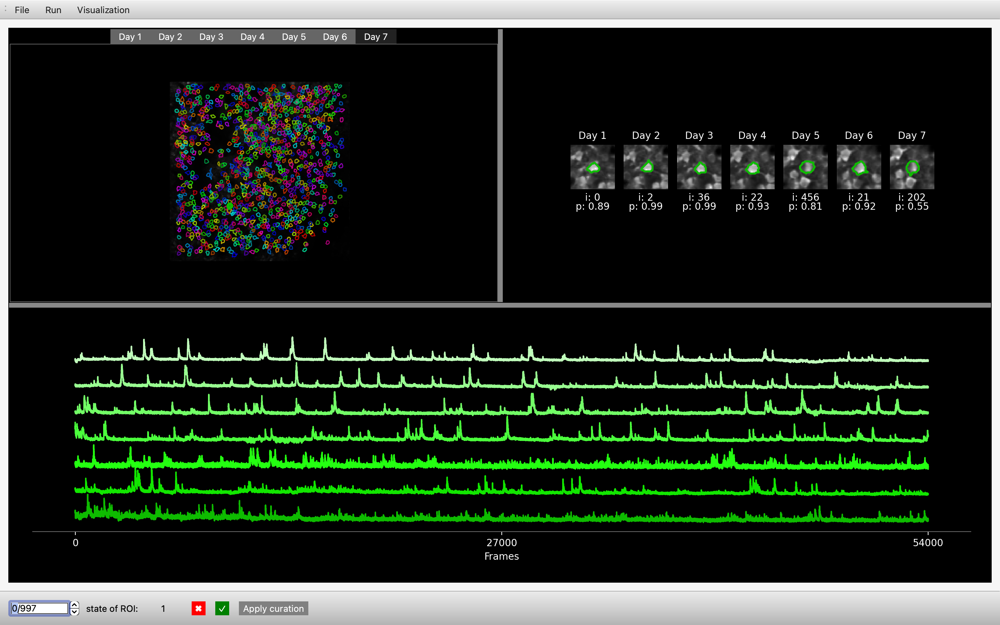

track2p#
Cell tracking for longitudinal calcium imaging recordings.


Note: We are actively developing the software for the next couple of months, so we would greatly appreciate any feedback! You can raise it as an issue on GitHub or contact us directly. Thanks!
Installation#
Installing via pip#
First we need to set up a conda environment with python 3.9:
conda create --name track2p python=3.9
conda activate track2p
Then simply install the track2p package using pip:
pip install itk-elastix==0.19.1 --no-deps
pip install track2p
Thats it, track2p should be succesfully set up :) You can simply run it by:
python -m track2p
This opens a GUI allowing the user to launch the algorithm and visualise the results interactively.
(For instructions on running track2p without the GUI see the ‘Run via script’ under the ‘Usage’ section)
Note: For common installation issues see documentation.
Reinstall#
To reinstall, open anaconda and remove the environment with:
conda env remove -n track2p
Then follow the ‘Installing via pip’ instructions above :)
Usage#
Run track2p through the GUI#
After activating the GUI through python -m track2p the user should navigate to the ‘Run’ tab on the top left of the window and select ‘Run track2p algorithm’ from the dropdown menu.
This will open a pop-up window that will allow the user to set the paths to suite2p datasets and to set the algorithm parameters. After configuring these settings, the user can click ‘Run’ to run the track2p algorithm, and the progress will be displayed in the terminal.
Once the algorithm finishes a subsequent pop-up window will prompt the user to decide whether they wish to visualize the results within the interface.
For more details on how to run the algorithm through the GUI see run track2p and for more description of parameters see documentation parameters.
Run track2p via script#
To run via script you can use the run_track2p.py script in the root of this repo as a template. It is exactly the same as running thrugh the gui, only that the paths and the parameters are defined within the script (for more on parameters etc. see documentation). When running make sure you are running it within the track2p environment, for example:
conda activate track2p
python -m run_track2p
Visualising track2p outputs within the GUI#
_ _ Note: For we assume that each of the to-be-matched recordings is done at the same imaging frequency, for the same imaging time, contains the same number of planes and number of imaging channels (otherwise we can not guarantee track2p will work)_ _
After activating the GUI through python -m track2p the user can import the results of any previous analysis by clicking on ‘File’ tab on the top left of the window and select ‘Load processed data’ from the dropdown menu. This will open a pop-up window that will allow the user to set the path to the track2p folder (containing the results of the algorithm) and the plane they want to open.
Once completed, the interface showcases multiple visualizations:

In this example we are using the track2p GUI to visualise the outputs for an experiment containing 7 consecutive daily recordings in mouse barrel cortex (between P8 and P14).
In the upper left, the GUI visualises the mean image of the motion-corrected functional channel (usually green / GCaMP). The image is overlayed with ROIs of the cells detected by track2p across all days, with the color of a particular cell matching across days. These images are interactive, allowing the user to click on a cell, which displays the fluorescence traces on each day at the bottom of the window (sorted from the first day to the last).
In addition, a zoomed-in image of the cell for each day is shown in the top right. Underneath each zoomed-in image the GUI displays this cell’s index in the corresponding ‘suite2p’ dataset and the ‘iscell’ probability suite2p has assigned to it on that day.
Finally, the user can browse all the putative matches detected by the algorithm using the bar at the bottom to toggle through matches, or alternatively they can enter the index of a specific number to display it within the GUI. This bar is also used for manual curation, where we allow the user to evaluate the quality of the tracking for each individual match.
For more details on how to use the GUI see GUI usage
Outputs#
All the outputs of the script will be saved in a track2p folder created within the track_ops.save_path directory specified by the user when running the algorithm. For an introduction on how to use the outputs for further downstream analysis we provide a useful demo notebook demo_t2p_output.ipynb in the root of this repository. Note: You will need to additionally install jupyter for this to work. For example:
conda install conda-forge::jupyterlab
For more information see documentation relating to track2p viusalisations and outputs.
Reference#
For now if you use the algorithm please reference the Cosyne abstract:
Majnik, J., Zangila, S., Cossart, R. & Platel, J. C. (2024). Emergence of state modulation in a developing cortical circuit. COSYNE Abstract.
You can also see the YouTube recording of the talk for a reference use-case in neocortical development: Link to video (starting at 47:20)